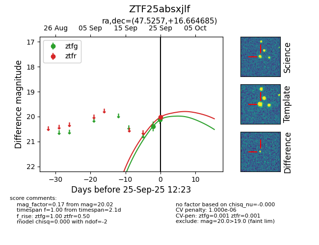
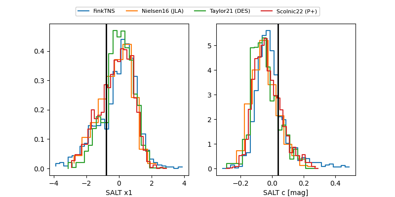

FINK: ZTF25absxjlf
Lasair: ZTF25absxjlf
ALeRCE: ZTF25absxjlf
ZTF25absxjlf (ztf,fink)
equatorial (ra, dec) = (47.5257,+16.66468)
galactic (l, b) = (164.4964,-34.78444)


last ztfg=20.13, ztfr=20.02
2 ztfg, 1 ztfr detections